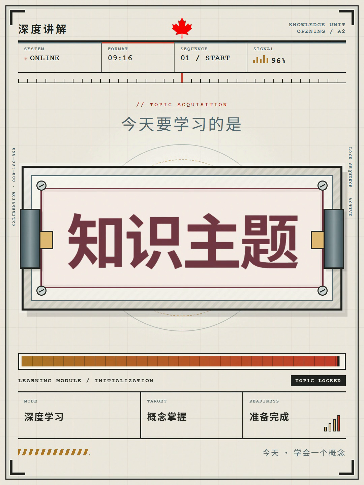
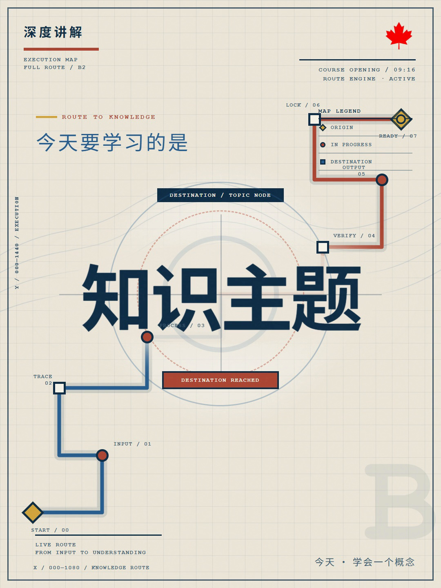
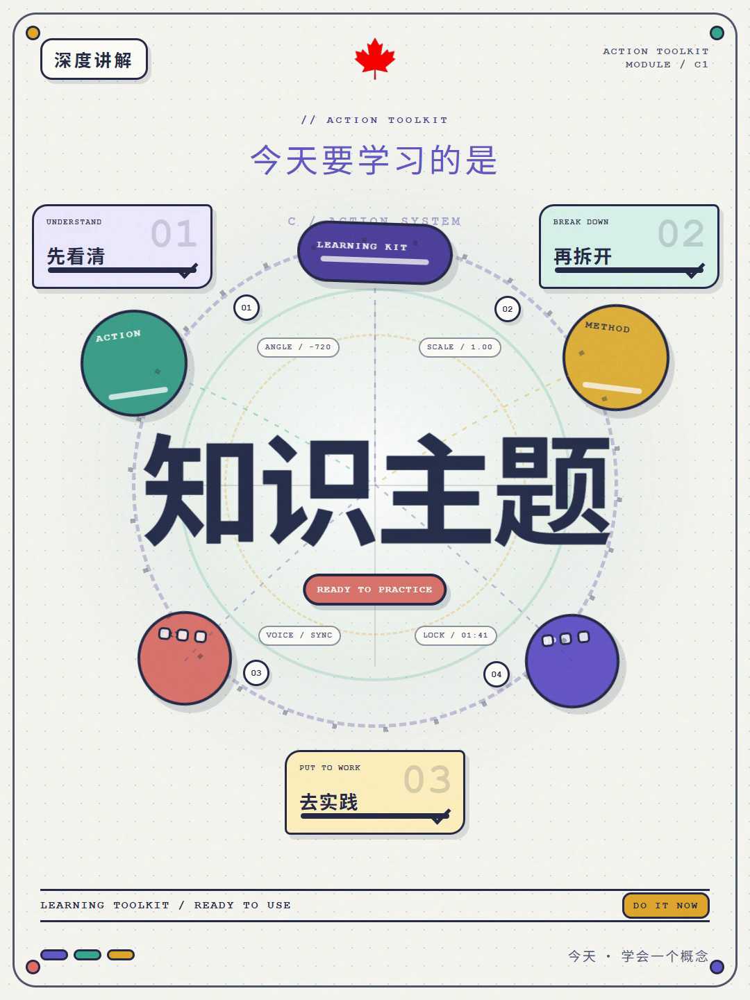

A · 纸本机械
暖纸张、档案仪器、刻度与机械锁定；主题词翻转后被扫描并固定。适合方法论、历史脉络和需要“查阅资料”感觉的内容。

三张图使用同一中性主题“知识主题”，只用于比较长期固定的视频视觉系统。每期直接选择 A、B 或 C，不按期重新生成视频候选。
暖纸张、档案仪器、刻度与机械锁定；主题词翻转后被扫描并固定。适合方法论、历史脉络和需要“查阅资料”感觉的内容。

米白网格、深蓝路径、节点和坐标；路线逐段绘制并抵达主题。适合技术原理、系统流程和抽象关系讲解。

浅色点阵、彩色模块、聚焦圆环与工具卡；组件聚合后突出主题。适合组成要素、认知步骤和轻量教学内容。
